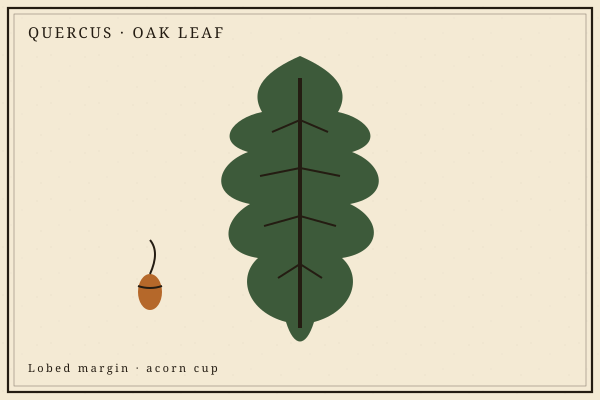

Choose a trail
Which expedition?
Pick the walk that fits the explorer. You can change trails later. No grades — only stamps, plates, and journal pages.
Nest
Big shapes
Tap a plate. Hear a short word. Soft sounds. A grown-up stays near.
Base camp
Naturalist's map
Habitats
Walk a place
Every habitat is a stack of homes. Look, then stamp a find.
Specimen tin
Collected plates
Hand lens
Look closer
Drag a finger across the plate. The brass ring enlarges the ink.

Choose a plate
Lab tent
Safe home experiments
Print the steps. Ask a grown-up when the card says so. Toner-light sheets live in the printables folder.
Body station
Senses and inner workings
The body is a designed workshop. Tap a sense. Older trails open the systems.
Five senses
System trails
Machine shed
Six simple machines
Levers in jaws. Ramps on hills. God filled the world with work-savers; people noticed and copied them.
Weather hill
Sky notes
Sun, wind, water on the move. Name the cloud. Watch a cycle in a bag.
Lookout
Creation field notes
Public-domain Scripture and original notes. We look at kinds, records, design, and the sky.
Topic trails
Anatomy and chemistry markers
Sort table
Kinds, parts, pairs
Field journal
Write what you saw
Date, place, three true things. Pages stay on this device. No names required.
Print a blank journal page Print specimen cards